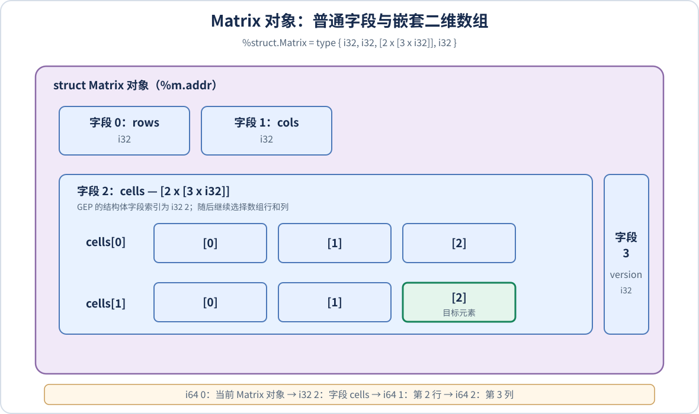
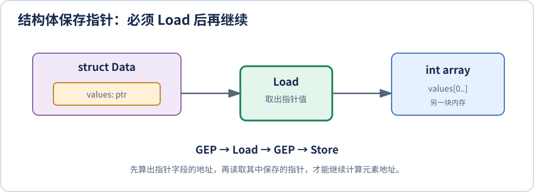
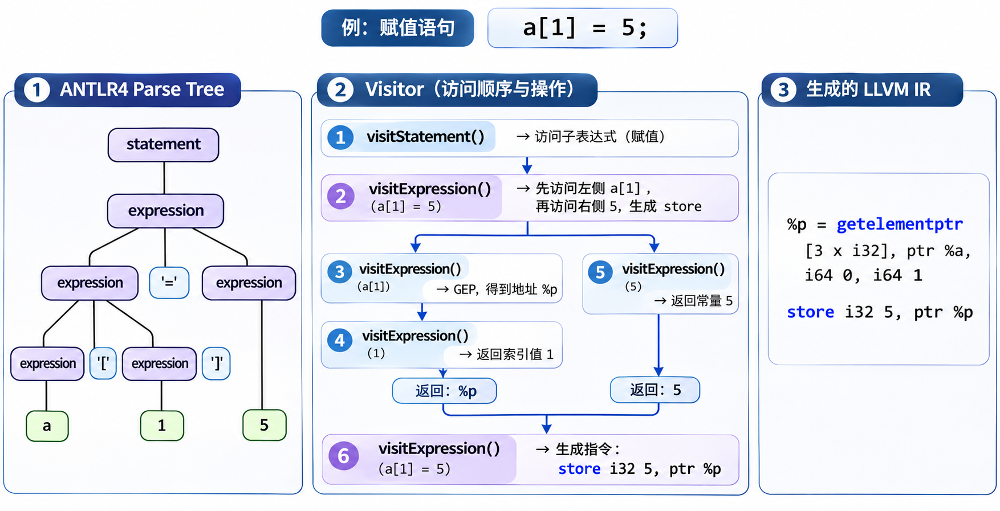
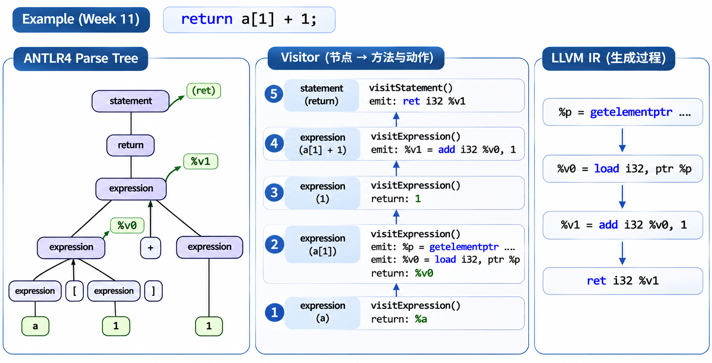

Week 11 - Translation 1
Week 11 — Address Computation and GEP¶
上一周，我们已经学会了如何在 LLVM IR 中为变量分配存储空间，以及如何读取和写入这些空间中的内容。本周继续沿着这条线往下走：
如果一个变量不是简单的整数，而是数组或结构体，我们怎样访问它内部的某个元素或字段？
本节不从一组独立的 LLVM 指令开始，而是从一个完整的 SPL 程序出发。接下来，我们会围绕这个程序逐步分析：先看清楚对象的类型和存储空间，再找到其中某个元素的地址，然后处理动态索引、读取和写入，最后回到编译器，看看这些操作应该怎样生成 LLVM IR。
1. 从一个完整程序开始¶
先看下面这个程序：
struct Matrix {
int rows;
int cols;
int cells[2][3];
int version;
};
int main() {
struct Matrix m;
int i;
int j;
int value;
i = 1;
j = 2;
value = 41;
m.cells[i][j] = value + 1;
return m.cells[1][2];
}
这个程序使用了当前 SPL 支持的结构体、数组、成员访问、数组访问和赋值表达式。我们最终希望把它翻译成 LLVM IR。
先不要急着翻译整段程序。我们先关注其中最关键的一句：
这条语句看起来很普通，但编译器需要完成几件不同的事情：
- 找到局部变量
m的存储空间。 - 找到结构体中的
cells字段。 - 根据
i和j找到二维数组中的目标元素。 - 计算右侧表达式
value + 1的结果。 - 将结果写入左侧目标元素。
其中，真正需要我们本周解决的新问题是第 2、3 步：已经有了整个结构体对象的地址，怎样进一步找到它内部某个数组元素的地址？
1.1 先弄清楚 m 在 LLVM 中是什么¶
源程序中的结构体定义是：
cells 是一个二维数组。外层数组有 2 个元素，每个元素又是一个包含 3 个 int 的数组。
在 LLVM IR 中，可以将这个结构体类型表示为：
这里：
i32对应 SPL 中的int。[3 x i32]表示一个包含 3 个i32的数组。[2 x [3 x i32]]表示一个包含 2 行、每行 3 个i32的二维数组。%struct.Matrix表示包含这四个字段的结构体类型。
结构体字段按照声明顺序从 0 开始编号：
| 源代码字段 | LLVM 类型 | 字段索引 |
|---|---|---|
rows |
i32 |
0 |
cols |
i32 |
1 |
cells |
[2 x [3 x i32]] |
2 |
version |
i32 |
3 |
因此，cells 虽然是一个二维数组，但它在结构体中仍然只是一个字段，字段索引为 2。数组内部的行和列索引，要在选中这个字段之后再继续计算。前后的 rows、cols 和 version 则帮助我们看清楚：结构体字段按声明顺序编号，数组字段并不会改变后续字段的编号。
因此，变量 m 的类型就是 %struct.Matrix。
接下来，为它分配存储空间：
这条指令与 Week 10 中学过的 alloca i32 完全是同一类操作，只不过这次分配的对象不再是一个整数，而是一个完整的结构体。
%m.addr 保存的是整个 m 对象的地址。它还不是 m.cells[1][2] 的地址，更不是这个数组元素中保存的整数值。
可以把 m 想象成下面这样的对象：

现在我们已经知道了对象的类型，也得到了整个对象的起始地址。接下来就要解决本节的核心问题：如何从 %m.addr 找到 m.cells[1][2]？
2. 从整个对象找到其中一个元素¶
为了先把地址计算本身看清楚，我们暂时把原程序中的动态索引 i 和 j 换成常量，先看：
这并没有改变对象的类型，只是让我们先不必考虑索引变量的值从哪里来。
2.1 沿着对象的类型逐层找到目标位置¶
从 %m.addr 出发，访问 m.cells[1][2] 实际上是一条逐层深入的路径：
%m.addr
|
v
struct Matrix 对象
|
| 选择字段 cells（字段索引 2）
v
[2 x [3 x i32]]
|
| 选择第 1 行
v
[3 x i32]
|
| 选择第 2 列
v
i32 元素
这里的数组下标从 0 开始，因此：
cells[1]是第二行；cells[1][2]是第二行中的第三个元素。
我们可以把这条路径拆成三次地址计算。先从结构体中找到 cells 字段：
再从二维数组中找到第二行：
最后从这一行中找到第三个元素：
这三步分别完成：
- 从结构体对象进入字段
cells； - 从二维数组进入第 2 行；
- 从这一行进入第 3 个元素。
到这里，我们已经得到了 m.cells[1][2] 的地址。注意，这个结果仍然是一个地址，并没有读取该位置中保存的整数。
2.2 为什么可以把这些步骤写成一条 GEP？¶
刚才我们为了理解访问路径，将地址计算拆成了三次。但这些步骤都只是在已知的结构体和数组布局中向内选择子对象，中间不需要读取内存中的其他值。
因此，LLVM 可以把它们合并成一条 getelementptr 指令，通常简称 GEP：
这条指令与前面三次 GEP 的地址计算结果相同。它从 %m.addr 出发，沿着类型和索引描述的路径，直接得到目标元素的地址。
这就是 GEP 的核心作用：
GEP 根据一个已有的基地址、对象类型和索引路径，计算某个子对象的地址。
它不负责读取或写入这个地址中的内容。
2.3 现在再看 GEP 中的类型和索引¶
GEP 的基本形式是：
回到刚才的指令：
各部分的作用如下：
| 部分 | 在当前例子中的含义 |
|---|---|
%struct.Matrix |
Source Element Type，告诉 LLVM 从什么类型的对象开始计算 |
ptr %m.addr |
基地址，也就是整个 m 对象的起始地址 |
第一个索引 i64 0 |
以 %struct.Matrix 为步进单位，从基地址移动 0 个完整结构体对象 |
第二个索引 i32 2 |
进入结构体，选择第三个字段 cells |
第三个索引 i64 1 |
进入二维数组，选择第二行 |
第四个索引 i64 2 |
进入该行，选择第三个元素 |
%element.addr |
最终计算得到的元素地址 |
这里最容易困惑的是为什么前面会有两个 0。它们的含义并不相同：
- 第一个
i64 0是 GEP 的第一个索引。它对基地址所指向的%struct.Matrix对象进行步进；移动 0 个完整对象，仍然指向当前的m。 - 第二个
i32 2才是结构体字段索引，表示选择结构体的第三个字段cells。 - 后面的
i64 1和i64 2则分别进入二维数组的行和列。
结合前面的 Matrix 对象图，可以看到这几个索引分别沿着结构体字段、数组行和数组列逐层向内选择对象。
第一个索引并不永远是 0。如果基地址指向一组连续的结构体对象，而我们要访问下一个结构体，就可以使用第一个索引 1。本例只访问当前的 m，所以使用 0。
结构体字段索引表示字段编号，而不是字节偏移。这里的 i32 2 选择第三个字段 cells；实际字段在内存中的字节位置由 LLVM 根据结构体类型和目标平台的 Data Layout 计算。结构体布局中即使存在 Padding，也不需要我们手工把它换算成字节偏移。
这里还可以注意到，GEP 中同时出现了 i64 和 i32：
- 在常见的 64 位目标平台上，第一个索引以及数组索引通常使用
i64，因为它们参与地址步进。 - 结构体字段索引有特殊规则，必须是
i32类型的整数常量。因此，选择cells时写作i32 2。
所以，本例中的 i64 0, i32 2, i64 1, i64 2 不是随意混用整数类型：它们分别对应对象步进、结构体字段选择、数组行索引和数组列索引。具体的指针索引宽度由目标平台的 Data Layout 决定；这里按常见的 64 位目标展示。
2.4 为什么 GEP 写了 ptr，还需要写 %struct.Matrix？¶
你可能注意到，现代 LLVM IR 中指针通常写成：
而不是旧式 LLVM IR 中的：
这是因为现代 LLVM 使用 Opaque Pointer（不透明指针）。ptr 只表示一个地址，指针类型本身不再记录它指向什么类型。
那么，LLVM 怎样知道应该按照什么布局计算地址？
答案就在 GEP 的第一个类型参数：
这里的 %struct.Matrix 就是 Source Element Type，它告诉 LLVM 本次地址计算应该从什么类型的对象开始。
同样，读取内存时也需要明确告诉 LLVM 要读取什么类型：
因此可以先记住：
ptr表示地址；- GEP 的 Source Element Type 描述地址计算所依据的对象布局；
- Load 的类型描述要从地址中读取什么值。
3. 回到原程序：动态索引、读取和写入¶
现在我们已经能够计算常量访问 m.cells[1][2] 的地址。回到原程序：
这里的 i 和 j 不再是写死的常量，而是变量。地址计算的路径没有发生变化，变化的只是行和列的索引需要在运行时取得。
3.1 动态索引从哪里来？¶
在原程序中，i 和 j 是普通的局部变量。按照 Week 10 学过的方式，先为它们分配存储空间，并写入初始值：
但 GEP 需要的是索引的数值，而 %i.addr 和 %j.addr 是变量的存储地址。因此，需要先从这两个地址中读取它们的值：
现在 %i.value 和 %j.value 才是可以用于地址计算的整数值。
在当前 64 位目标的示例中，数组索引使用 i64。因此，需要先把从变量中读取的 i32 索引扩展为 i64：
然后将它们作为 GEP 的数组索引：
这里的 sext 是有符号扩展：它把 i32 整数扩展为 i64，同时保留原来的数值。注意，转换的是数组索引 i 和 j，结构体字段索引仍然是 i32 2。
GEP 并不要求所有索引都是常量。数组索引可以是运行时计算得到的整数值；其宽度需要与目标平台的指针索引规则相匹配。不同目标平台可能使用不同的 pointer index type。
3.2 找到左侧地址之后，如何完成赋值？¶
现在，左侧 m.cells[i][j] 的地址已经算出来了：
但源程序要求的是：
GEP 只找到了目标位置，还没有把结果写进去。我们还需要计算右侧表达式 value + 1。
变量 value 的值保存在它的存储空间中，因此先读取它，再执行加法：
最后，将计算结果写入左侧地址：
把这几个操作连起来：
到这里，我们自然会发现，同一个表达式在不同位置可能需要的是地址，也可能需要的是值。
对于赋值左侧，编译器需要知道写入位置，所以要生成地址；对于加法表达式，编译器需要整数值，所以要读取变量内容。GEP、Load 和 Store 正好分别承担这些工作。
3.3 如果只是读取元素，而不是修改元素呢？¶
原程序的最后一行是：
这次我们不需要向数组元素写入值，而是要把它当前保存的整数作为函数返回值。
地址计算与前面完全一样：
但得到地址之后，这次需要执行 Load：
因此，赋值和读取的区别并不在于 GEP：
- 访问路径相同，地址计算可以相同；
- 要修改元素，就使用 Store；
- 要取得元素中保存的值，就使用 Load。
4. GEP 的边界：为什么有时必须先 Load？¶
到目前为止，主案例中的所有访问都可以沿着结构体和数组的类型布局连续计算。原因是 cells 是直接嵌入 Matrix 的数组：它属于结构体对象本身，LLVM 能够根据类型确定它的位置。
现在我们只改变一个条件，看看会发生什么。
先回忆主案例中的结构体：
cells 是数组对象本身，直接包含在 Matrix 中。为了对比直接嵌入的数组与间接引用的对象，再看下面这个 C 语言结构体：
这里的 values 不再是结构体内部的数组，而是一个指针变量。结构体中存放的是一个地址，这个地址指向另一块内存。
下面的代码是 C 语言拓展，用于说明 LLVM 的间接寻址机制，不属于当前 SPL 的语法范围。
假设 %p 已经是一个指向 struct Data 对象的指针值，要访问 p->values[i]，首先需要找到结构体中 values 这个字段本身：
注意，%values.addr 是指针字段自己的存储地址。它并不是 values 所指向的数组地址。
要取得字段中保存的指针值，还需要 Load：
现在 %values.ptr 才是指向整数数组的指针值。假设 %i 是已经计算得到的 i32 索引值，在当前 64 位目标的示例中，先将它扩展为 i64，再以 %values.ptr 作为新的基地址计算元素地址：
如果要把 100 写入该元素，最后再执行：
整个过程是：

这与主案例中的 m.cells[i][j] 有什么区别？
| 主案例：结构体中直接包含数组 | C 拓展：结构体中保存指针 |
|---|---|
cells 是结构体对象的一部分 |
values 字段中保存一个指针值 |
| 数组布局由结构体类型直接描述 | 指针指向的对象不属于该结构体的嵌套布局 |
| GEP 可以连续计算到数组元素 | 先 GEP 找到指针字段，再 Load 读出指针值 |
| 后续 GEP 使用原有对象的类型路径 | 后续 GEP 使用 Load 得到的新指针作为基地址 |
所以，判断是否需要 Load，关键不是源代码中出现了几层 [] 或成员访问，而是：
下一步地址计算所需的基地址，是否已经在手中？如果它是存储在内存中的指针值，就必须先 Load 出来。
这就是 GEP 的边界：GEP 负责根据已有地址和类型布局计算新地址，但它不会替我们读取内存中的指针。
5. 回到编译器：如何生成这段 LLVM IR？¶
现在再回头看最初的赋值语句：
我们已经知道它在 LLVM IR 中需要哪些操作。对于 IR Generator 来说，最重要的是区分两件事：
- 生成一个对象的地址；
- 生成一个表达式的值。
可以把它们抽象成两个接口：
例如：
- 对标识符
m，emitAddress(m)从符号表中取得变量的存储地址。 - 对成员访问
m.cells，先取得m的地址，再根据结构体类型信息找到cells的字段编号，生成 GEP。 - 对数组访问
m.cells[i]，先取得数组对象地址，再计算索引i的值，生成 GEP。 - 对普通变量
value，如果需要它的数值，就先取得地址，再使用 Load。
因此，赋值语句可以概括为：
这不是要求编译器一定使用这两个函数名，而是表达一种实现上的职责划分：左侧需要位置，右侧需要值。
5.1 将主案例完整翻译¶
现在把前面逐步得到的结果组合起来。
首先是结构体类型：
完整 LLVM IR 可以写成：
%struct.Matrix = type { i32, i32, [2 x [3 x i32]], i32 }
define i32 @main() {
entry:
; Allocate local objects
%m.addr = alloca %struct.Matrix
%i.addr = alloca i32
%j.addr = alloca i32
%value.addr = alloca i32
; Initialize scalar variables
store i32 1, ptr %i.addr
store i32 2, ptr %j.addr
store i32 41, ptr %value.addr
; Read the dynamic indices
%i.value = load i32, ptr %i.addr
%j.value = load i32, ptr %j.addr
%i.index = sext i32 %i.value to i64
%j.index = sext i32 %j.value to i64
; Calculate the address of m.cells[i][j]
%element.addr = getelementptr %struct.Matrix, ptr %m.addr,
i64 0, i32 2, i64 %i.index, i64 %j.index
; Evaluate value + 1
%value.value = load i32, ptr %value.addr
%sum = add i32 %value.value, 1
; Store the result into m.cells[i][j]
store i32 %sum, ptr %element.addr
; Calculate the address of m.cells[1][2]
%result.addr = getelementptr %struct.Matrix, ptr %m.addr,
i64 0, i32 2, i64 1, i64 2
; Read the element and return it
%result = load i32, ptr %result.addr
ret i32 %result
}
由于 i = 1、j = 2、value = 41，赋值语句会把 42 写入 m.cells[1][2]，最后程序读取这个元素并返回 42。
回顾整段翻译：
alloca为局部变量和整个结构体对象分配存储空间。- Load 读取动态索引和普通变量的值。
- GEP 根据结构体和数组的类型布局计算目标元素地址。
add计算右侧表达式。- Store 将计算结果写入目标地址。
- 返回表达式再次使用 GEP 得到地址，再通过 Load 读取元素值。
从头到尾，我们解决的始终是同一个问题：如何从一个已有对象出发，找到它内部的目标元素，并正确读取或修改它？
5.2 练习¶
下面的练习继续围绕本节的地址计算规则展开，不再引入新的语言特性。
Exercise 1：改变访问位置
struct Matrix {
int rows;
int cols;
int cells[2][3];
int version;
};
struct Matrix m;
m.cells[0][1] = 7;
写出计算 m.cells[0][1] 地址的 GEP，并解释每个索引的含义。
Exercise 2：动态索引
struct Matrix {
int rows;
int cols;
int cells[2][3];
int version;
};
struct Matrix m;
int i;
int j;
m.cells[i][j] = 7;
说明为什么需要先取得 i 和 j 的值，再将它们作为 GEP 的索引。
Exercise 3：读取而不是写入
写出对应的 GEP 和 Load，并说明为什么这里不需要 Store。
Exercise 4：C 拓展——指针字段
假设 %p 已经是指向 struct Data 的指针值，写出访问 p->values[i] 所需的 GEP、Load 和 GEP，并解释中间为什么必须 Load。
6. 实践：使用 ANTLR4 Visitor 生成 LLVM IR¶
在之前的 Project 中，我们已经多次使用 ANTLR4 Visitor 遍历 Parse Tree。
例如，在语义分析阶段，每当访问一个语法节点，我们可能需要检查变量是否声明、判断表达式的类型，或者向符号表中添加新的符号。
现在，我们仍然使用相同的 Visitor 机制，只不过 访问语法节点时所做的事情发生了变化 。
在 Code Generation 阶段，我们的目标是将 SPL 程序翻译成 LLVM IR。最直观的实现方式，就是准备一个 StringBuilder，用于保存已经生成的 LLVM IR：
随后，我们使用 Visitor 遍历 Parse Tree。每遇到一个需要翻译的语法结构，就生成对应的 LLVM IR 指令，并将其追加到 StringBuilder 中。
例如，遇到整数加法，我们生成 add 指令；遇到变量声明，我们可能需要生成 alloca；遇到赋值语句，我们需要生成 store；遇到返回语句，则生成 ret。
这样，随着 Visitor 不断遍历语法树，LLVM IR 也会逐步生成：
需要注意，这里的“一句一句翻译”并不意味着每条 SPL 语句都恰好对应一条 LLVM IR 指令。一条语句可能需要生成多条指令，而且对于复杂表达式，我们通常需要先递归翻译子表达式，再生成父表达式的指令。
不过，整体思路十分简单：以前我们通过 Visitor 遍历语法树，进行检查并维护语义信息；现在我们通过 Visitor 遍历语法树，逐步生成并累积目标代码。
接下来，我们就结合一个简单的 SPL 程序，看看每个语法节点如何生成相应的 LLVM IR。
6.1 从语法节点到 LLVM IR¶
考虑下面这个程序：
我们要生成的 LLVM IR 是：
define i32 @main() {
entry:
%a = alloca [3 x i32]
%p0 = getelementptr [3 x i32], ptr %a, i64 0, i64 1
store i32 5, ptr %p0
%p1 = getelementptr [3 x i32], ptr %a, i64 0, i64 1
%t0 = load i32, ptr %p1
%t1 = add i32 %t0, 1
ret i32 %t1
}
请特别注意今年的 SPL 语法： 赋值、数组索引和加法都是 expression 的不同形式，所以它们都进入同一个 visitExpression() 方法；不是 visitAssign()、visitAdd() 或 visitArrayAccess() 三个自动生成的方法。这里遍历的是 ANTLR4 生成的 Parse Tree 。
6.2 左侧数组元素：生成地址，再 Store¶

图的阅读方式： 从赋值表达式节点开始，访问左侧 a[1] 取得地址 %p0，访问右侧常量 5 得到字符串 "5"，最后追加 store 指令。图是经过折叠的关键子树示意；下面的 Java 代码是精确的教学逻辑。
对于赋值表达式 a[1] = 5，不能直接用通常的 visit(ctx.expression(0)) 取得左侧操作数，因为普通表达式访问通常需要一个 值 ，而赋值左侧需要一个 地址 。
因此，先定义一个非常简单的辅助方法 addressOf()，仅负责计算标识符和数组元素的地址：
private String addressOf(SplcParser.ExpressionContext ctx) {
if (ctx.LBRACK() != null) { // expression '[' expression ']'
String base = addressOf(ctx.expression(0));
String index = visit(ctx.expression(1));
String ptr = "%p" + pointerCounter++;
ir.append(" ").append(ptr)
.append(" = getelementptr [3 x i32], ptr ")
.append(base).append(", i64 0, i64 ")
.append(index).append("\n");
return ptr;
}
if (ctx.Identifier() != null && ctx.expression().isEmpty()) {
return variables.get(ctx.Identifier().getText());
}
throw new UnsupportedOperationException("Not an addressable expression");
}
这里的 [3 x i32]、两层 GEP 索引与数组类型都只针对本例；一般编译器必须根据变量类型决定具体的 Source Element Type 和索引路径。variables 是代码生成器维护的变量名到 LLVM 地址的映射，例如 a → %a。
赋值表达式的 visitExpression() 分支则是：
if (ctx.ASSIGN() != null) {
String address = addressOf(ctx.expression(0));
String value = visit(ctx.expression(1));
ir.append(" store i32 ").append(value)
.append(", ptr ").append(address).append("\n");
return value; // 赋值表达式的值，即 RHS 的值
}
其中 visit(5) 返回 "5"，不会产生额外指令。两个步骤合在一起得到：
6.3 右侧数组元素：生成地址、Load，再计算¶

返回表达式 a[1] + 1 同样会访问 a[1]，但这一次需要参与加法的是数组元素 保存的整数 ，不是地址。因此先用 addressOf() 生成 GEP，再用 load 得到值。
在 visitExpression() 中：
// expression '[' expression ']' 作为一个普通右值
if (ctx.LBRACK() != null) {
String address = addressOf(ctx);
String result = "%t" + tempCounter++;
ir.append(" ").append(result)
.append(" = load i32, ptr ").append(address)
.append("\n");
return result;
}
加法则直接递归访问左右子表达式：
if (ctx.PLUS() != null && ctx.expression().size() == 2) {
String left = visit(ctx.expression(0));
String right = visit(ctx.expression(1));
String result = "%t" + tempCounter++;
ir.append(" ").append(result)
.append(" = add i32 ").append(left)
.append(", ").append(right).append("\n");
return result;
}
最后，visitReturnStatement() 负责先访问返回表达式，再生成 ret：
@Override
public String visitReturnStatement(SplcParser.ReturnStatementContext ctx) {
String result = visit(ctx.expression());
ir.append(" ret i32 ").append(result).append("\n");
return null;
}
这样便依次得到 getelementptr → load → add → ret。代码中的 %p0、%p1、%t0、%t1 是递增计数器产生的名称，并不是把操作数或临时结果硬编码进输出字符串。
简化示例说明： 上面只展示几个关键分支，省略了函数头、函数体和数组声明部分的 Visitor 代码。数字常量的
visitExpression()分支直接返回ctx.Number().getText()。此外，本例为了简洁使用固定长度为 3 的一维整型数组；完整的数组与结构体翻译还需要类型信息、通用地址计算、作用域管理等。
6.4 从 StringBuilder 到 Builder¶
直接用字符串拼接最容易看懂生成过程，但实际编译器可以将这些操作封装成 Builder。老师提供的练习 Framework 中，builder.add(left, right) 和 builder.load(addr, name) 就是此类封装；Visitor 负责确定当前节点 应该生成什么 ，Builder 负责确定 指令如何表达和输出 。
该 Framework 使用 独立的简化 SPL 语法 ，只支持标量 int 等基本内容，并不支持上面的数组/GEP 教学示例。它只用于下一节的轻量练习。
6.5 课堂练习（简化 Framework）¶
按照教师提供的 Starter Code，完成指定的少量 LLVMVisitor.java TODO。其他辅助逻辑由 Framework 提供，不要求从零实现一个编译器。
期望程序返回 6。可选思考：把 a = a + 1 改成 a = a + 3 后，会有哪些生成指令发生变化？
延伸阅读¶
LLVM 官方资料
- The LLVM Language Reference — getelementptr instruction：GEP 的正式语法和语义。
- The Often Misunderstood GEP Instruction：解释 GEP 的第一个索引、结构体字段访问和指针间接访问。
- Opaque Pointers：解释现代 LLVM 中
ptr的设计。
补充：inbounds 与数组边界
inbounds 不是运行时数组边界检查。它是向 LLVM 提供关于地址计算范围的保证，供 LLVM 优化使用；如果实际计算违反相应约束，GEP 结果可能成为 poison value。
初学阶段先掌握普通 GEP 的地址计算规则即可，不要把 inbounds 理解成自动插入的越界检查。